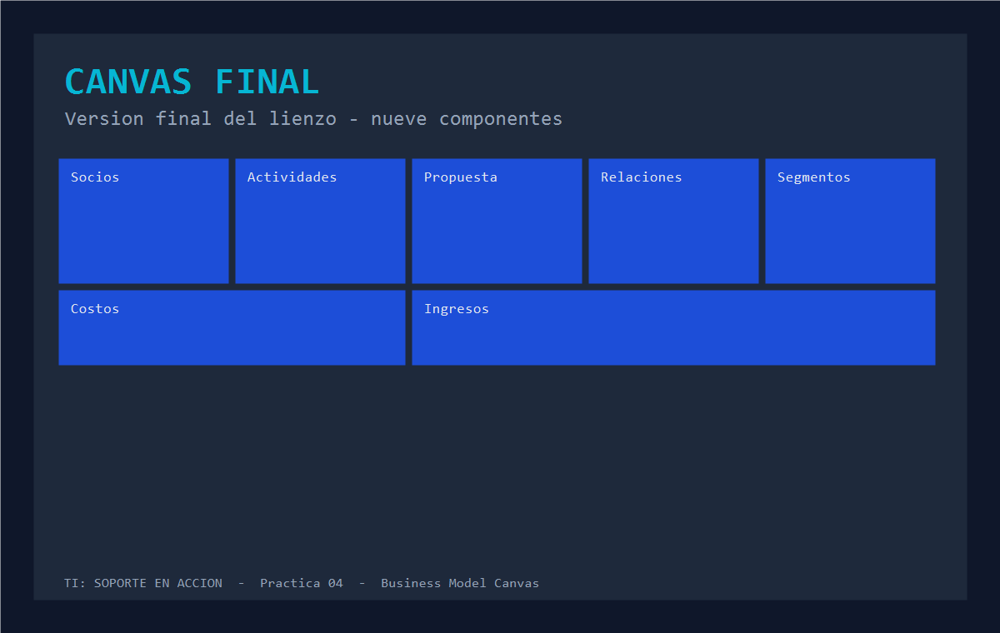

Videojuego educativo 2D pixel art
Practica Tecnologías de la Información resolviendo misiones reales
TI: Soporte en Acción es un videojuego de aventura y simulación donde Alex, un recién egresado, resuelve incidentes de soporte técnico en NovaTech Solutions. El proyecto integra un videojuego en Unity, una app móvil en Flutter y una PWA en React sobre servicios compartidos.
Business Model Canvas · 9 componentes
Pasa el cursor sobre las tarjetas para ver descripciones y haz clic en cualquier bloque para abrir su ficha completa. Las líneas indican las relaciones entre componentes.
Personajes y usuarios de la historia
Sprites conceptuales de NovaTech Solutions (material de diseño pixel art).
Tecnologías y arquitectura
Un solo proyecto integrador: videojuego, móvil, web y servicios compartidos.
Evidencias
Capturas del proceso de construcción del lienzo.


Ver canvas-v1.png Ver canvas-final.png Abrir en GitHub Pages